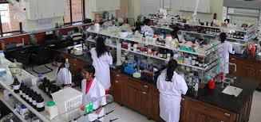
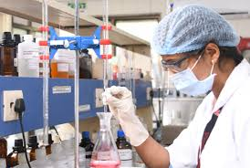

- HOME
- ABOUT US
- ADMISSIONS
- ACHIEVEMENTS
- DEPARTMENTS
- R & D CELL
- IQAC
- TRAINING & PLACEMENTS
- CENTRAL LIBRARY
- FACILITIES
- POLICIES
- ALUMINI
- NBA
- NAAC
- NIRF
- IIC
- E-LEARNING
- ONLINE GRIEVANCE
- CONTACT US
- LOGIN
DEPARTMENT OF CHEMICAL ENGINEERING


The Department of Chemical Engineering was started with UG programme in 2012 with an intake of 60 and subsequently to 30 in 2020. PG programme (M.Tech) in Food Processing Technology with an intake of 9 has been sanctioned by AICTE from the academic year 2021-22. The Department of Chemical Engineering at ANITS boasts of a very efficient team of faculty with 6 doctorates from renowned institutes like IISc, IITs and AU. The department is well equipped with Chemical Engineering laboratories and has the equipment for inter-disciplinary research especially in the fields of Environmental and Biotechnology. The students of Chemical Engineering were successfully placed in reputated industries.
The "Chemical Block" at ANITS (Anil Neerukonda Institute of Technology & Sciences) refers to the buildings and facilities housing the Department of Chemical Engineering and related departments, including the Department of Chemistry. The block includes laboratories, classrooms, and other resources for the study of chemical processes, materials, and related sciences.
More details about the Chemical Block at ANITS:
Department of Chemical Engineering:
This department offers undergraduate (B.Tech) and postgraduate (M.Tech) programs in Chemical Engineering and Food Processing Technology, respectively.
Department of Chemistry:
This department has two Engineering chemistry labs, an Organic chemistry lab, a Project lab, and a MODROBS lab.
Facilities:
The block includes well-equipped laboratories for chemical engineering and chemistry, including equipment for interdisciplinary research in areas like environmental and biotechnology.
Research:
The department is actively involved in research, with faculty publishing research papers and conducting research projects.
Location:
The Chemical Block is likely located within the broader ANITS campus, possibly in a specific building or complex designated for engineering departments.
Classrooms and Seminar Halls:
The campus includes ICT-enabled classrooms and seminar halls for various departments, including Chemical Engineering.
:: ANITS Class Room & Seminar Hall Details ::
* Class Room with ICT Facility Details. ICT based Teaching & Learning Process plays a vital role in college/Institute, in order t...
ANIL NEERUKONDA INSTITUTE OF TECHNOLOGY AND SCIENCES
Chemical Engineering - Anits
The Department of Chemical Engineering was started with UG programme in 2012 with an intake of 60 and subsequently to 30 in 2020.
Anits
anil neerukonda institute of technology and sciences (a) - Anits
To organize, establish and manage both Technical and Non- Technical Colleges and Charitable Institutions without any motive of pro...
Anits
Show all
Generative AI is experimental.